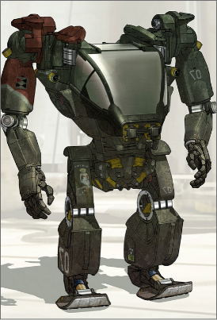

Protheses: "Zet je beste beentje voor"
6 stappen vooruit
Frankrijk
We beginnen in Frankrijk rond de 1500. Een onbekende Franse legerchirurg was de eerste die een boven knie prothese en een verstelbaar harnas produceerde. Ook was hij de eerste die een vaste positie kon geven aan een prothese. Hij werkte vervolgens samen met een Franse slotenmaker en gebruikte papier, leer en lijm om een prothese te fabriceren.
Romeinen
De Romeinse generaal Marcus Sergius was de eerste man die een prothese droeg. Hij verloor zijn rechterhand in de tweede Punische oorlog. De Punische oorlogen waren een reeks oorlogen die werden uitgevochten tussen de Romeinse Republiek en het oude Carthago. Er is bewijs dat hij een schild had die hem ondersteunde de strijd op het oorlogsveld te vervolgen. Helaas verloor hij zijn rechter hand wat ervoor zorgde dat zijn leger carrière ten einde liep. (Kucha, 2020)
“Great Civil War Benefaction”
De Great Civil War vond plaats van 1642-1651. Nadat soldaten terugkeerde van hun post zag men hoeveel nood er was aan protheses als gevolg van gevechten. De Amerikaanse regering deed een belofte aan de gehandicapte veteranen om protheses te bekrachtigen. De ondernemers zagen de groei van de prothese industrie opkomen en gingen met elkaar de strijd aan. Reclames werden opgesteld over de baat en gemak van een kunst ledemaat. Men noemde dit de hedendaagse “wapenwedloop”. Het design van de protheses was niet gebruikers gericht. De beloftes uit de reclame kwamen niet tot uiting. Hierdoor kozen de meeste veteranen alsnog voor krukken.
Tot 1863 waren hout en staal de benodigdheden om alternatieve ledematen te produceren. Vervolgens werd de cosmetische rubberen hand tentoongesteld. Het uiterlijk zag er natuurlijker uit door het rubber en was een degelijke vervanger voor de onbuigzame benodigdheden voorheen. De onder druk bewegende vingers op de vroegere modellen zorgde ervoor dat men een vork of potlood konden vasthouden. Sommige onderarmen kon men eraf halen en afwisselen met opzet stukken, zoals een Zwitsers zakmes, haken, borstels, zagen of andere benodigdheden. (MacRea, 2011)

Egyptenaren
De Franse en Romeinse protheses zorgde voor evolutie in design en technologie. De Egyptenaren maakte al gebruik van deze methodes in hun protheses van 950 tot 710 voor Christus. Maar dat dit zo was werd pas bekend in 2000, daarom is dit pas stap 3 in de evolutie. Een patholoog deed een opgraving van een grote teenprothese. Deze behoorde toe aan een mummie van een Egyptische vrouw.
Burgeroorlog
De burgeroorlog in het Amerikaanse tijdperk geeft een duidelijke piek aan als het gaat om amputaties van ledematen. Soldaat James Hanger heeft het metalen staven been uitgevonden nadat zijn been was geamputeerd. Dit innovatieve ledemaat kreeg de naam Hanger. Onderzoekers van de prothese industrie kregen door deze uitvinding de mogelijkheid om meer innovatieve structuren toe te passen in de toekomstige producties.
De tijd van nu
De laatste stap is de hedendaagse 20e eeuw. Ondanks de toename van protheses was er tot 1970 geen roemrijkende innovatie in de design wereld van protheses. Onderzoeker Ysirdo M.Martinez introduceerde in 1970 een prothese die de wrijving kon verminderen en manier van beweging gemakkelijk kon maken in plaats van alleen de beweging nabootsen. Lopen werd gemakkelijker en de druk op de patiënten werd lichter, waardoor hun manier en kwaliteit van leven hervormde. (Kucha, 2020)

My prothesis and me
Jos on the move
7 maanden lang heeft hij gerevalideerd in Adelante te Valkenburg, vervolgens nog 5 maanden dagverpleging en uiteindelijk heeft hij zijn eigen revalidatie traject opgezet. Hij gebruikt dagelijks een rolstoel om zich te verplaatsen, maar na veel oefening tijdens het begin traject van de revalidatie kan hij nu na 5 jaar 12 tot 15 stappen zetten met behulp van een looprekje. Tijdens de revalidatie maakte hij gebruik van voetspalken en beenortheses om stevigheid te hebben. Met veel oefeningen heeft hij zijn spieren weer kunnen prikkelen om te groeien.
Hij heeft ook mee gedaan aan een onderzoek voor een exoskelet, maar dit pak was zo groot dat het niet mogelijk was om in en uit de rolstoel te komen. Hij kon tijdens het gebruik van het exoskelet alleen tussendoor even op een krukje zitten. Dat deze mogelijkheden er zijn vindt Jos fantastisch. Hij kan oefenen met zijn spieren en deze opbouwen met behulp van verschillende protheses.
Als deze mogelijkheden er niet waren geweest, was hij afhankelijk geworden van zijn rolstoel en dat heeft hij natuurlijk liever niet. Door het aangepast design in zijn protheses heeft Jos kunnen oefenen met zijn spieren. Door deze oefeningen zijn z’n spieren gegroeid en kan hij nu zelfstandig al enkele meters lopen. Hij is enorm dankbaar dat hij gebruik heeft kunnen maken van deze middelen en nu zelfstandiger is dan eerst. Ga zo door Jos! (J. Wetzels, persoonlijke communicatie, 01/10/2021)
De toekomst
Bestuurbaar exoskelet uit Avatar
In de film Avatar wordt gebruikt gemaakt van het Mitsubishi MK-6 Amplified Mobility Platform (of "AMP" -pak). In het midden van de 21e eeuw werden oudere modellen gebruikt op aarde, maar momenteel zijn er al meerdere aanpassingen gedaan aan het design dat het meer bruikbaar maakt voor militaire diensten. Op de maan- en Marskolonies worden de pakken ingezet, bijv. Pandora, waar de omgeving erg dodelijk is. Dankzij het vernieuwde design is de persoon in het skelet mobieler, krachtiger, mogelijkheid om wapens te bedienen en kan het alle functies van een soldaat verdubbelen. Het design van het skelet is daarom ook gebaseerd op de menselijke lichaamsstructuur, zoals twee armen met 2 behendige handen en twee benen.
De beweging van het skelet is bestuurbaar door de operator in het skelet. De operator kan voelen wat het skelet beoefent. De beweging van de benen word bedient door grote voetpedalen die in een nog grotere verhouding intensiveren. De pedalen zijn niet het zelfde bestuurbaar als de armen. De boordcomputer controleert met een overeenkomstig programma de beweging van de benen. Het skelet voert dus de intentie uit van de operator.
De besturing van het skelet eist veel oefening, tijd en geduld. Je kan namelijk niet meteen van een liggende of zittende positie naar een rechtopstaande positie veranderen. Dit vergt maanden oefening. Het skelet heeft ook een “walk-back” functie mocht de operator gewond raken of komen te overlijden. Het design van het pak is dus niet een simpel opzetwerk geweest. Het is functioneel en kan in veel situaties erg effectief zijn. (Iomnibus, 2015)
Men is nog steeds bezig met vele aanpassingen aan het design van het skelet om het zo functioneel mogelijk te maken. Dat is natuurlijk veel en erg gedetailleerd werk. Ik hoop dat er in de toekomst een exoskelet op menselijke formaat word gepresenteerd. Dit zou veel mensen met een lichamelijke beperking kunnen helpen om hun functionaliteit uit te breiden. Heidegger waarschuwt ons wel op het gevaar dat als wij gebruik maken van technologie, technologie ook gebruikt maakt van ons.